01
打开原图 ↗今日概览
FR-01 / FR-03从一句话记录开始，常用动作与后台任务保持可见。
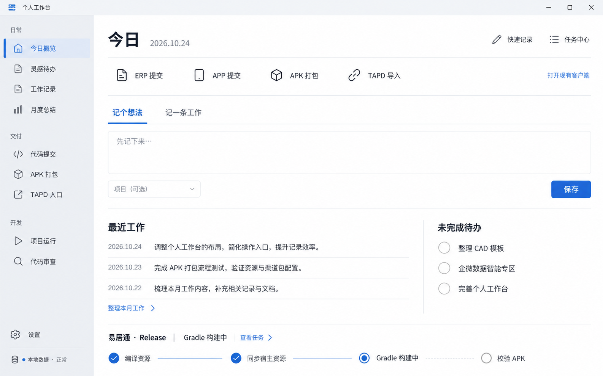
02
打开原图 ↗ERP 原生提交
FR-02核对仓库、文件与目标分支后，确认提交并合并。
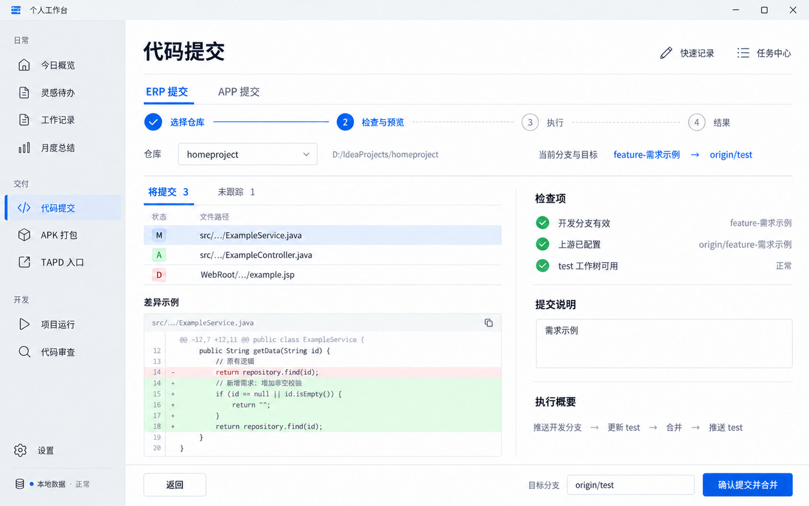
03
打开原图 ↗APP 原生提交
FR-02远程更新后核对最终清单，始终保护本地测试配置。
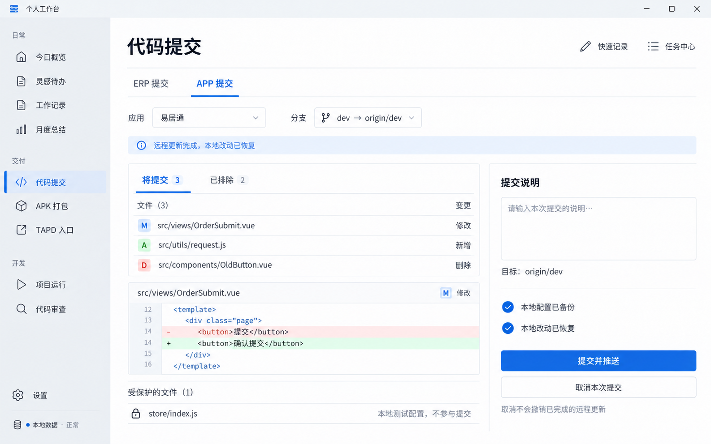
04
打开原图 ↗APK 打包进行中
FR-02 / FR-03显示四个真实构建阶段，运行中锁定配置。
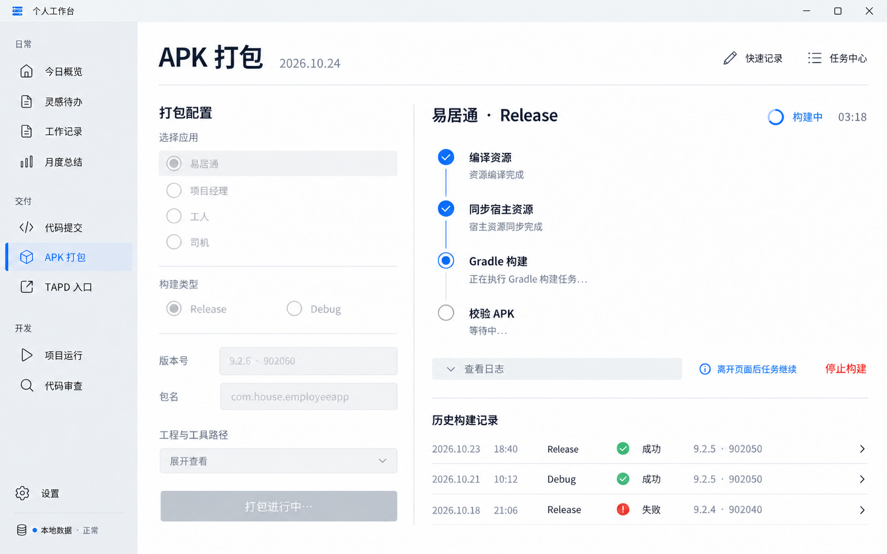
05
打开原图 ↗项目运行
FR-10覆盖全部 11 个工作目录，按类型与实例归属提供操作。
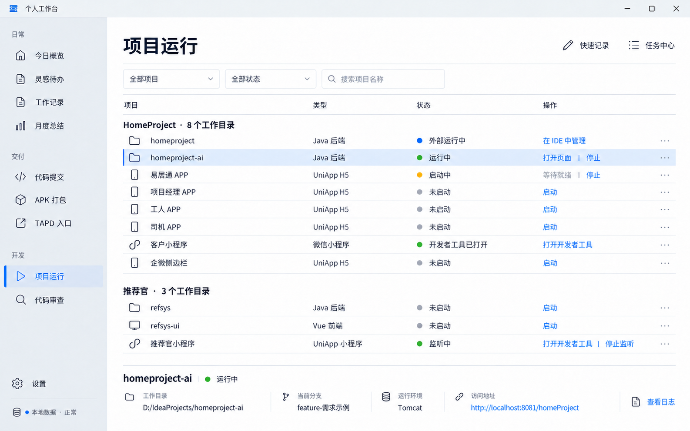
06
打开原图 ↗Git 差异与人工审查
FR-11文件、差异与意见并排；代码变化后重新核对。
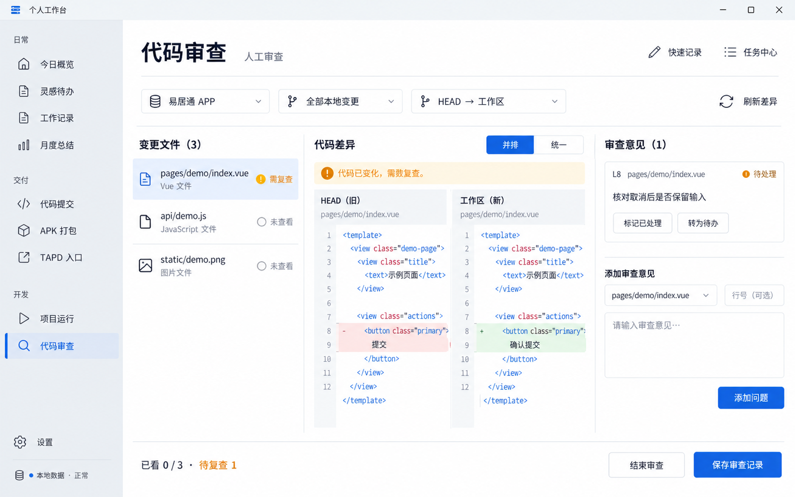
07
打开原图 ↗灵感待办
FR-05轻量收集、编辑与完成，记录工作由用户另行发起。
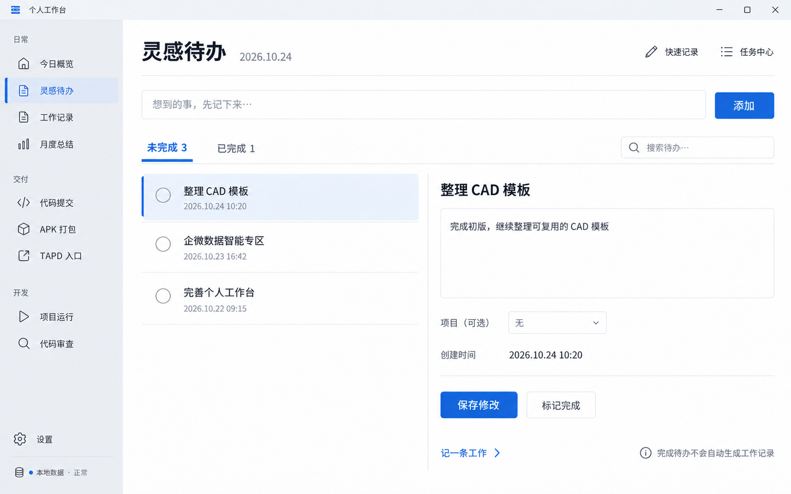
08
打开原图 ↗工作记录
FR-06按发生日期记录，导入历史缺失日期时单独处理。
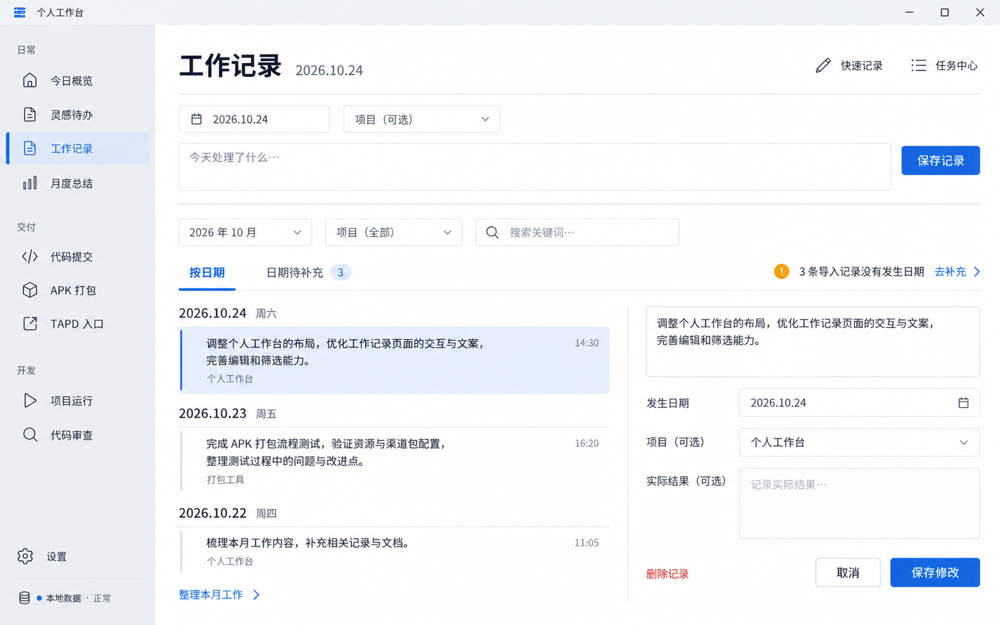
09
打开原图 ↗月度总结
FR-07依据现有模板人工整理，正文与原始来源并排核对。
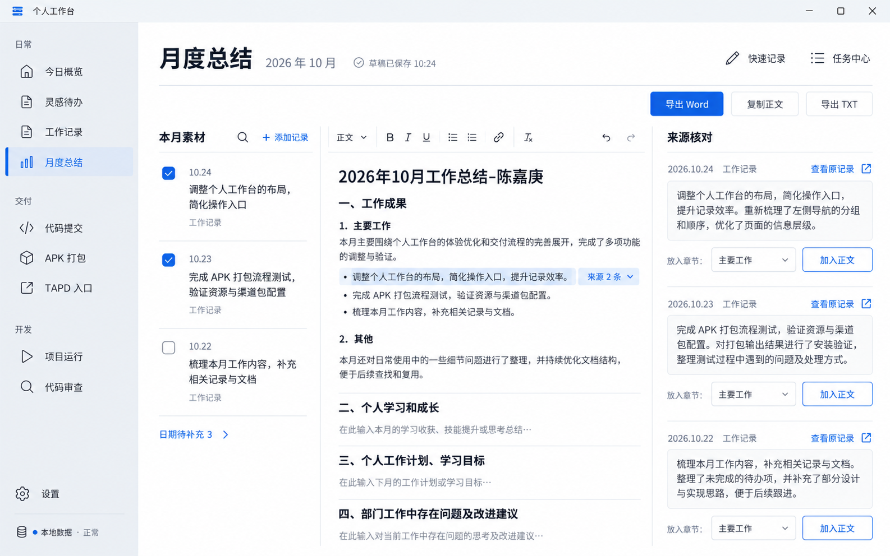
10
打开原图 ↗TAPD 入口
FR-04首版打开现有客户端，并明确显示启动反馈。
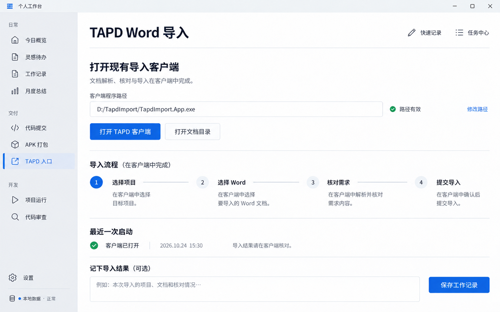
11
打开原图 ↗TXT 导入预览
FR-08复制导入前核对原文、重复项和日期。
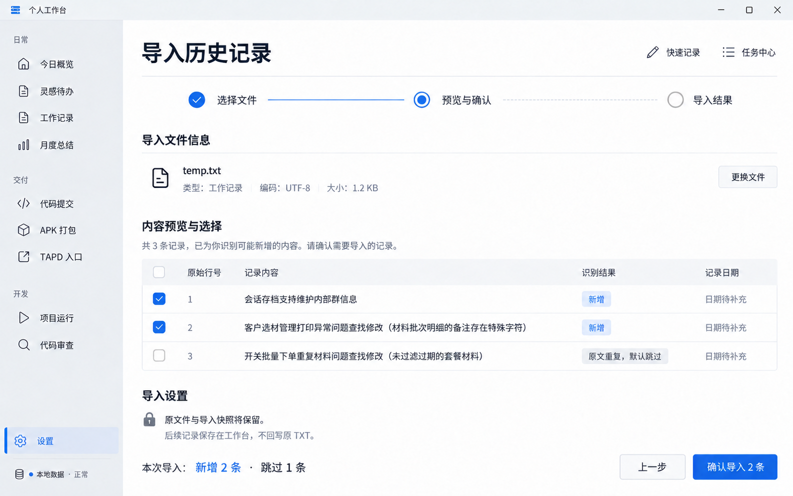
12
打开原图 ↗设置与本地数据
FR-09本地数据位置、备份和恢复入口。
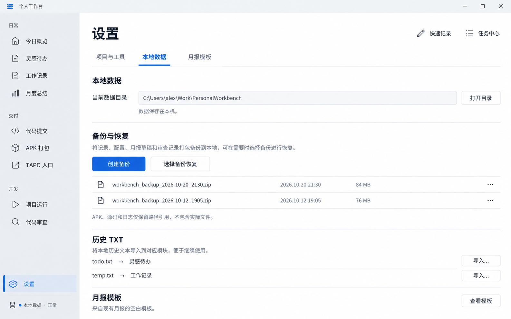
13
打开原图 ↗部分失败与恢复
FR-03 / FR-02保留已经完成的阶段，展示失败位置及下一步。
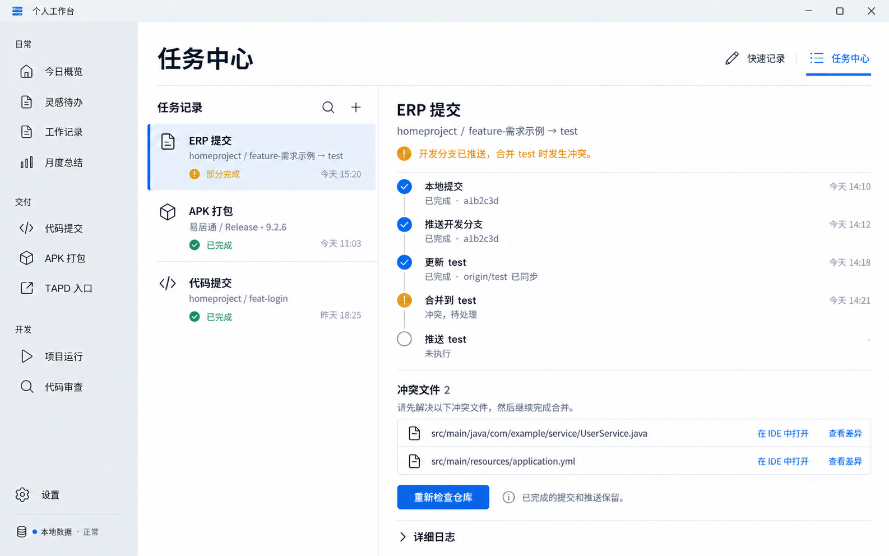
14
打开原图 ↗打包结果与产物
FR-02 / FR-03核对资源、签名和版本，定位任务对应的 APK。
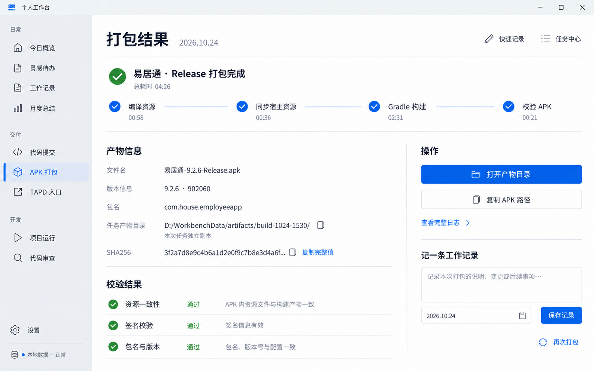